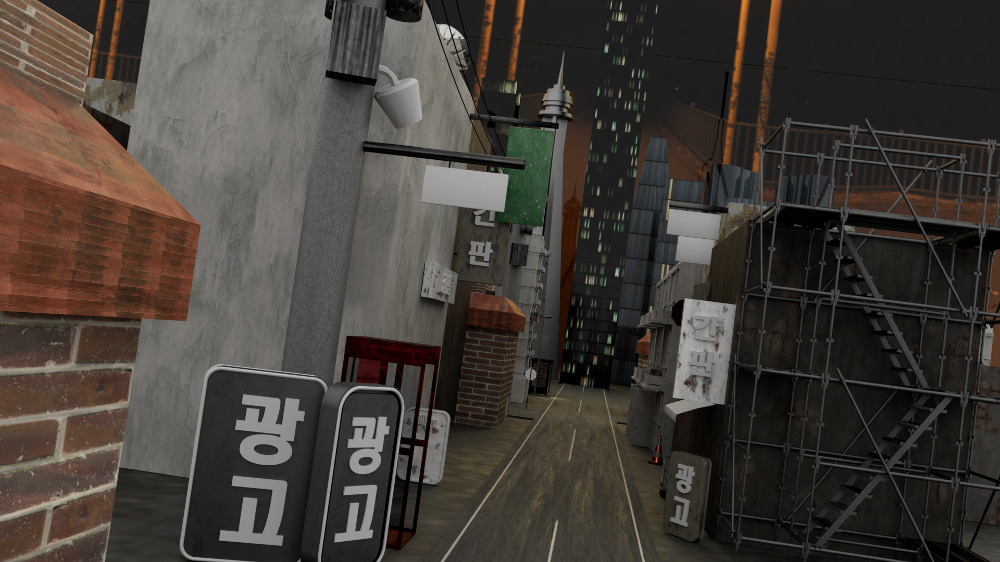
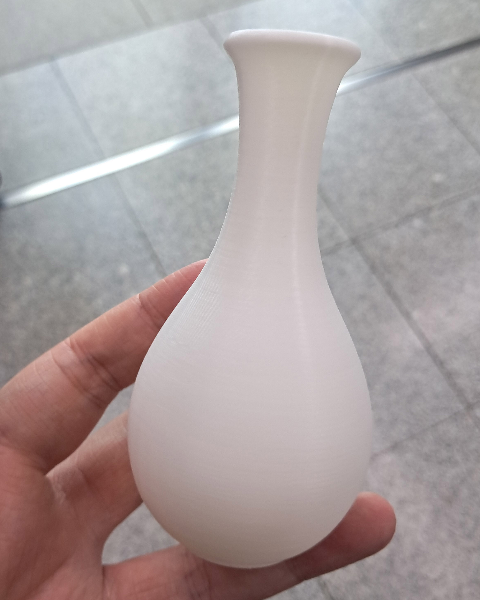

3D MODELING

프로젝트 제목 1: 미니멀리스트 의자 모델링
섬세한 디테일과 사실적인 렌더링이 돋보이는 가구 3D 모델링 프로젝트입니다.
상세 설명
이곳에 3D 모델링 작업물에 대한 자세한 설명을 작성합니다. 모델링의 목적, 컨셉, 사용된 소프트웨어 및 렌더링 엔진, 주요 기능, 그리고 작업 과정에서 겪었던 어려움과 해결 과정 등을 구체적으로 기술할 수 있습니다.
- **기획 의도:** 실제 제품의 디지털 트윈 제작
- **주요 역할:** 3D 모델링, 텍스처링, 렌더링, 라이팅
- **사용 툴:** Cinema 4D, V-Ray, Substance Painter
다양한 각도 및 상세 이미지
액션 포즈 (전신)
얼굴 클로즈업

초기 컨셉 아트

사이버 펑크 시티: 도시 모델링
게임/애니메이션에 활용될 수 있는 도시 모델링입니다.
상세 설명
두 번째 작업물에 대한 상세 설명입니다. 캐릭터 디자인 컨셉, 모델링 과정(스컬핑, 리토폴로지, UV 언랩 등), 텍스처링, 리깅/애니메이션 가능성 등을 기술할 수 있습니다.
- **기획 의도:** 게임 프로젝트용 캐릭터 개발
- **주요 역할:** 캐릭터 모델링, 텍스처링, 맵핑
- **사용 툴:** ZBrush, Maya, Substance Painter
다양한 포즈 및 컨셉 아트

액션 포즈 (전신)
얼굴 클로즈업

초기 컨셉 아트
프로젝트 제목 1: 미니멀리스트 의자 모델링
섬세한 디테일과 사실적인 렌더링이 돋보이는 가구 3D 모델링 프로젝트입니다.
상세 설명
이곳에 3D 모델링 작업물에 대한 자세한 설명을 작성합니다. 모델링의 목적, 컨셉, 사용된 소프트웨어 및 렌더링 엔진, 주요 기능, 그리고 작업 과정에서 겪었던 어려움과 해결 과정 등을 구체적으로 기술할 수 있습니다.
- **기획 의도:** 실제 제품의 디지털 트윈 제작
- **주요 역할:** 3D 모델링, 텍스처링, 렌더링, 라이팅
- **사용 툴:** Cinema 4D, V-Ray, Substance Painter
다양한 각도 및 상세 이미지

액션 포즈 (전신)
얼굴 클로즈업
초기 컨셉 아트